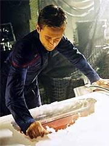
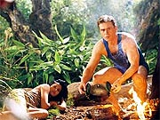

|
MANCHETE
DO EPISÓDIO
Sequência
interminável de clichês se
apóia num par romântico sem química
Episódio
anterior | Próximo
episódio
Sinopse:
A Enterprise atende a um pedido de socorro de um cargueiro alienígena. Os dois tripulantes, Firek Goff e Firek Plinn, vêm a bordo e requisitam o auxílio para efetuar reparos no motor de dobra de sua nave. Eles precisam seguir viagem para levar uma passageira até um mundo distante, numa viagem que ainda levaria cinco meses. Em razão do longo período de tempo, ela está viajando numa câmara de suspensão animada.
Trip vai a bordo para tentar solucionar o problema, enquanto os dois alienígenas são recebidos na Enterprise. Depois de um banho, o capitão Archer oferece a possibilidade de levá-los diretamente ao destino deles -- o que poderia reduzir a viagem de cinco meses para poucos dias.
Os dois recusam, alegando a necessidade de chegar lá com a passageira somente em cinco meses, mas aceitam a hospitalidade do capitão no que diz respeito a uma refeição. Enquanto eles estão comendo, entretanto, Goff detecta um problema naa câmara de suspensão animada. Ele corre de volta à nave dele para ver o que está havendo.
Trip já havia percebido a falha e agora corria para libertar a mulher, que estava sufocando na câmara defeituosa. Ele consegue libertá-la, mas Goff chega em seguida e, com um golpe, deixa o engenheiro inconsciente. Em seguida, Goff contata Plinn e pede que ele volte ao cargueiro. O alienígena sai às pressas da sala de refeições do capitão e ruma para a porta de atracação.
Depois de tentar contatar Trip, sem sucesso, Archer pede a Malcolm Reed que acompanhe Plinn de volta à sua nave. O alienígena não quer, mas o oficial diz que está sob ordens. Goff está à espera na porta de atracação, mas, com a presença dos oficiais da Enterprise, ele acaba reagindo e iniciando um tiroteio.
Plinn não consegue voltar à nave, mas Goff parte, arrebentando a trava de atracação e partindo em dobra. A Enterprise imediatamente parte em perseguição, mas acaba perdendo o cargueiro de vista depois que a nave alienígena contamina suas naceles ao liberar partículas no espaço.
 Enquanto isso, no cargueiro, Trip coloca seu tradutor universal para funcionar e descobre que a mulher não é uma passageira, mas uma prisioneira. Ela se chama Kaitaama, e vai se tornar Primeira Monarca de Krioisia Prime em poucos meses. Goff volta e ordena que Trip conserte a câmara de stasis, para que Kaitaama possa ser novamente colocada em suspensão.
O engenheiro, entretanto, tem outros planos. Ele decide fugir num casulo de escape do cargueiro, na esperança de que Archer possa encontrá-lo. Com alguma dificuldade, ele consegue convencer Kaitaama a acompanhá-lo. Os dois conseguem manipular os sensores internos do cargueiro e fugir sem serem imediatamente notados. Trip em seguida direciona o casulo para um sistema planetário próximo.
Na Enterprise, Archer interroga Plinn, na esperança de que o alienígena o ajude a localizar o cargueiro. Quando o cativo se recusa a cooperar, o capitão elabora um ardil -- um julgamento conduzido por T'Pol que supostamente vai condenar o alienígena à morte por seus crimes. Diante da pressão, Plinn acaba oferecendo informações sobre a frequência do motor de dobra do cargueiro.
Longe dali, Trip e Kaitaama fazem um pouso forçado num planeta classe-M do sistema. Lá os dois precisam superar suas diferenças e sobreviver. O processo acaba levando os dois a terem um envolvimento romântico. O clima é interrompido quando a dupla persegue que há mais gente no planeta -- possivelmente Goff.
De fato, o alienígena está à espreita, mas os dois acabam por conseguir neutralizá-lo. Pouco depois, Archer e um grupo de descida também chegam ao planeta, resgatando a dupla.
A Enterprise então parte ao encontro de uma nave de Krioisia, que irá levar Kaitaama de volta a seu planeta. A mulher, entretanto, está muito mudada. Ela pede que Trip vá a seu mundo no dia de sua posse como Primeira Monarca, quando ela poderá mudar as regras de sua sociedade e permitir legalmente seu envolvimento em relacionamentos românticos.
Comentários:
"Precious Cargo" é talvez o melhor exemplo já oferecido por
Enterprise sobre o tema "monotonia". Etimologicamente, algo monótono seria aquele que se mantém sempre no mesmo tom, no mesmo ritmo, na mesma sintonia. É o diagnóstico exato deste segmento.
Não há grandes furos no roteiro, nem uma história que exija tremenda suspensão da descrença. Mas a incapacidade de desenvolver o enredo num "crescendo", com um clímax em seu final que justifique sua existência, acaba minando qualquer esperança de encontrar algo aproveitável.
Esse problema tem muito a ver com o fato de que o segmento consegue a façanha de marcar um "zero" em seu coeficiente de criatividade. É impressionante como, em todos os aspectos,
"Precious Cargo" não passa de um enorme amontoado de clichês.
Aquela velha história da princesinha que não suporta o herói pé-rapado, mas acaba se apaixonando por ele é recontada pela enésima vez. O tema é tradicional, e muitas vezes rendeu bons frutos no cinema, na televisão e na literatura (as paixões de Indiana Jones e a relação Han Solo/Leia, apostam exatamente nesse modelo, para citar dois exemplos). Aqui, entretanto, nada parece se sobressair de forma a tornar o velho clichê palatável à audiência.
Essa absurda falta de criatividade atua em todos os planos do episódio. Começa na história, que segue um curso inalterável e óbvio do começo ao fim, sem uma única virada ou beco sem saída que deixe a audiência tentando adivinhar o que virá logo depois. Passa pelo roteiro, que parece particularmente pouco inspirado e incapaz de soprar alguma vida ao episódio (o que não é surpreendente, dado o enredo oferecido ao roteirista). Caminha pela direção, que não vai mal, mas não se esforça por compensar fotograficamente a falta de criatividade da história que está sendo contada. E termina nos elementos técnicos, com maquiagens pouco inspiradas e cenários pouco impressionantes.
Quando primeiro os fãs ouviram falar de "Precious Cargo", muitos imaginaram que a dupla Rick Berman & Brannon Braga estivesse reciclando o velho
"The Perfect
Mate", de A Nova Geração. Acabou que há muito poucas semelhanças entre os dois enredos (vale dizer que o da
Nova Geração não é uma obra-prima, mas é muito melhor que este aqui), mas do ponto de vista visual há uma "clonagem" até agressiva de elementos.
Kaitaama, por exemplo, tem um rosto quase humano. Sua única diferença é a presença de algumas pintas na lateral da face -- exatamente a mesma maquiagem usada pela protagonista de
"The Perfect Mate" (que depois daria "inspiração" para a criação da maquiagem Trill, em
Deep Space Nine). Os dois sequestradores, Goff e Plinn, embora tenha maquiagem mais sofisticada, também não passam de famigerados alienígenas da semana.
Diante de tamanha desgraça criativa, os únicos que poderiam salvar alguma coisa aqui são os atores. O episódio é claramente centrado em Trip e em Kaitaama. O pobre Connor Trinneer faz o que pode para conduzir o fraco episódio com dignidade. Consegue até. Mas o fato é que, em segmentos como esse, a química entre os dois atores é fundamental para transmitir à audiência algum senso de interesse.
 Infelizmente, a modelo Padma Lakshmi é uma das piores atrizes a figurar nos elencos de
Jornada nas Estrelas. Faz a também modelo Persis Khambatta (a Ilia, do primeiro filme para cinema) parecer atriz candidata a Oscar. É simplesmente horrível. Constrangedor. Em suma, ela destrói toda e qualque possibilidade de Trinneer salvar o episódio.
Para não ficar sem elogios, vale registrar três coisas. A primeira delas é a cena entre T'Pol e Archer, no falso julgamento de Plinn. Tudo bem que o alienígena precisa ser muito estúpido para cair naquela pataquada, mas ao menos o teor cômico da cena funciona (com Archer e ele reverenciando T'Pol e a Vulcana pedindo as medidas para o caixão do alienígena).
O segundo ponto forte, como não poderia deixar de ser, são as sequências de efeitos especiais. Especialmente bem executada é a descida do casulo de fuga no planeta.
Para completar, algo que nem deveria ser um elogio, mas, diante de aberrações já ocorridas em
Enterprise, vale registrar: "Precious Cargo" felizmente não causa quaisquer danos aos personagens regulares. Nenhum deles se comporta como um completo idiota, uma criança ou coisa do tipo, como já aconteceu antes em desgraças como
"A Night in Sickbay". Não há qualquer dano à dignidade dos personagens. Se é para se fazer um episódio ruim, esse é o mínimo que se pode exigir.
No fim das contas, "Precious Cargo" talvez não seja o pior episódio de
Enterprise. Mas, até aqui, é sem dúvida alguma o mais esquecível.
Citações:
Tucker - "With any luck, sleeping beauty here will never know there was a problem."
("Com alguma sorte, a bela adormecida aqui nunca vai saber que houve um problema.")
Archer - "Take him back to docking port two. Put him in the airlock and post a security detail. [To Plinn] If you decide to leave, you know the way out."
("Leve-o de volta à porta de atracação dois. Coloque-o na escotilha e deixe uma equipe de segurança. [Para Plinn] Se você decidir sair, você sabe o caminho.")
T'Pol - "Does your culture observe any post mortem rituals?"
("Sua cultura observa algum ritual post mortem?")
Trivia:
 Este foi o primeiro episódio escrito por David A. Goodman, que se juntou à equipe de roteiristas no segundo ano. Ele antes havia trabalhado em "Wings", "The Golden Girls" e "Team Knight Rider", além de um filme de "Scooby-Doo" para vídeo e o filme de TV "The Adventures of Captain Zoom in Outer Space" (com Ron Perlman e Nichelle Nichols).
Este foi o primeiro episódio escrito por David A. Goodman, que se juntou à equipe de roteiristas no segundo ano. Ele antes havia trabalhado em "Wings", "The Golden Girls" e "Team Knight Rider", além de um filme de "Scooby-Doo" para vídeo e o filme de TV "The Adventures of Captain Zoom in Outer Space" (com Ron Perlman e Nichelle Nichols).
Leland Crooke já havia interpretado Gelnon em
"One Little Ship" e "Honor Among Thieves", ambos de
Deep Space Nine. Scott Klace já havia interpretado Dremk, em "Juggernaut", de
Voyager.
As filmagens foram de 11 de outubro de 2002 a 21 de outubro.
Goodman chegou a defender o episódio, diante da insatisfação dos fãs. "A história era de Rick e Brannon, mas eu gostei muito e fiquei feliz de eles terem me dado a chance de escrever o roteiro. Eu gostei de escrevê-lo, e foi empolgante ver o processo de produção levando ao que eu acho que seja uma hora de entretenimento. As atuações dos personagens principais de Enterprise foram incríveis e o episódio é realmente do Connor, e acho que ele fez um grande trabalho."
Ficha
técnica:
História de Rick Berman &
Brannon Braga
Roteiro de David A. Goodman
Direção de David Livingston
Exibido em 11/12/2002
Produção:
037
Elenco:
Scott
Bakula como Jonathan Archer
Jolene Blalock como
T'Pol
John Billingsley
como Phlox
Anthony Montgomery
como Travis Mayweather
Connor Trinneer como
Charlie 'Trip' Tucker III
Dominic Keating como
Malcolm Reed
Linda Park como Hoshi Sato
Elenco convidado:
Padma Lakshmi como Kaitaama
Leland Crooke como Firek Plinn
Scott Klace como Firek Goff
Episódio
anterior | Próximo
episódio
|